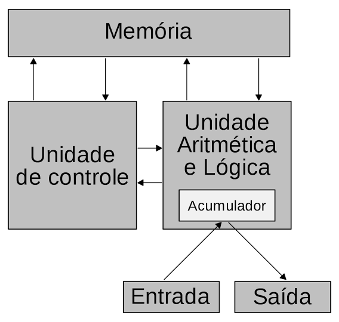

John von Neumann, nascido Margittai Neumann János Lajos (Budapeste, 28 de dezembro de 1903 — Washington, D.C., 8 de fevereiro de 1957) foi um físico-matemático e engenheiro químico húngaro de origem judaica, naturalizado estadunidense.
Contribuiu na teoria dos conjuntos, análise funcional, teoria ergódica, mecânica quântica, ciência da computação, economia, teoria dos jogos, análise numérica, hidrodinâmica das explosões, estatística e muitas outras áreas da matemática. De fato é considerado um dos mais importantes matemáticos do século XX.
Foi membro do Instituto de Estudos Avançados de Princeton, Nova Jérsei, do qual também faziam parte Albert Einstein e Erwin Panofsky, quando emigraram para os Estados Unidos, além de Kurt Gödel, Robert Oppenheimer, George F. Kennan e Hermann Weyl. Com Edward Teller e Stanisław Ulam, von Neumann trabalhou em desenvolvimentos chave da Física Nuclear, relacionados com reações termonucleares e com a bomba de hidrogênio. Participou também do Projeto Manhattan, responsável pelo desenvolvimento das primeiras bombas atômicas.
Foi professor na Universidade de Princeton e um dos construtores do ENIAC. Entre os anos de 1946 e 1953, von Neumann integrou o grupo reunido sob o nome de Macy Conferences, contribuindo para a consolidação da teoria cibernética junto com outros cientistas renomados: Gregory Bateson, Heinz von Foerster, Kurt Lewin, Margaret Mead, Norbert Wiener, Paul Lazarsfeld, William Ross Ashby, Claude Shannon, Erik Erikson e Max Delbrück, entre outros. Von Neumann faleceu pouco depois, aos 53 anos, vítima de um tumor cerebral.
John von Neumann é considerado um dos maiores pioneiros e "pais da computação moderna". Enquanto figuras como Alan Turing criaram os fundamentos matemáticos e a ideia abstrata da máquina universal, Von Neumann deu o salto essencial para transformá-la em uma arquitetura de hardware prática, viável e escalável.
Em 1945, no famoso documento intitulado First Draft of a Report on the EDVAC, Von Neumann propôs que tanto os dados quanto as instruções do programa deveriam ser armazenados no mesmo espaço de memória física em formato binário. Essa ideia permitiu que os computadores se tornassem máquinas de propósito geral verdadeiramente reprogramáveis sem a necessidade de intervenção física no hardware.
Antes do trabalho de Von Neumann, os computadores das décadas de 1930 e 1940 (como o ENIAC) eram reconfigurados manualmente para cada nova tarefa por meio da manipulação de cabos, plugues e chaves comutadoras.
Von Neumann formalizou e padronizou o modelo estrutural do hardware dos computadores, dividindo a arquitetura do sistema em quatro subsistemas fundamentais:

Von Neumann não atuou apenas no campo teórico; ele participou diretamente da implementação física de computadores pioneiros:
Criou o algoritmo de ordenação Merge Sort, desenvolveu métodos de geração de números aleatórios para simulações e inventou os Autômatos Celulares (base teórica para a vida artificial e robótica auto-replicável).
Foi a mais alta condecoração civil dada pelo governo americano durante a Guerra Fria. Von Neumann a recebeu por seu papel crucial na segurança nacional e no desenvolvimento da estratégia de defesa e armas nucleares dos EUA.
Von Neumann foi o primeiro laureado individual da história a receber este prêmio (anteriormente concedido como uma honraria especial ao próprio Fermi). Foi dado por suas contribuições fundamentais para o desenvolvimento de computadores de alta velocidade aplicados à física e tecnologia nuclear.
Foi a maior honraria civil entregue aos cientistas que apoiaram os Aliados durante a Segunda Guerra Mundial. Von Neumann foi reconhecido diretamente por seus cálculos e contribuições decisivas no Projeto Manhattan.
É o reconhecimento máximo do seu gênio na matemática pura, concedido anos antes de seu trabalho na computação e no esforço de guerra, por suas pesquisas avançadas sobre operadores e teoria dos anéis.
Poucas mentes na história da humanidade moldaram a estrutura do mundo moderno com tanta profundeza e abrangência quanto John von Neumann. Considerado um dos maiores polímatas do século XX, ele não se limitou a resolver grandes enigmas da matemática pura; von Neumann teve a capacidade singular de transformar abstrações teóricas em infraestruturas práticas que continuam a governar a sociedade do século XXI.
O pilar mais visível de seu legado reside na Ciência da Computação. Ao propor que instruções de software e dados deveriam ser armazenados no mesmo espaço de memória, ele libertou o hardware de configurações manuais rígidas e deu origem ao computador digital programável de propósito geral. Da máquina mais simples aos supercomputadores e smartphones atuais, praticamente toda a arquitetura digital contemporânea opera sob o modelo que carrega seu nome. Complementando o hardware, suas criações de algoritmos eficientes de ordenação e geradores de números pseudoaleatórios viabilizaram as simulações computacionais em grande escala.
Contudo, sua influência estende-se muito além das telas e circuitos. Na Economia e na Ciência Política, von Neumann revolucionou a forma como compreendemos a tomada de decisões ao fundar a Teoria dos Jogos. Essa estrutura matemática para analisar cenários de conflito e cooperação redefiniu a microeconomia, as estratégias de mercado e as doutrinas de segurança geopolítica durante a Guerra Fria. Na Física, deu o rigor formal necessário à Mecânica Quântica e desempenhou papel crucial no Projeto Manhattan, cujos cálculos foram determinantes para o advento da era nuclear.
Em seus anos finais, antecipou discussões que hoje definem a fronteira da tecnologia e da ciência. Ao criar o conceito de autômatos celulares e projetar máquinas capazes de ler instruções para construir cópias exatas de si mesmas, ele antecipou a própria lógica molecular do DNA e lançou as bases para a inteligência artificial, a robótica autorreplicante e a vida artificial.
John von Neumann deixou como legado não apenas descobertas isoladas, mas a própria linguagem matemática e tecnológica com a qual a civilização moderna calcula, comunica-se, toma decisões e compreende a complexidade do universo.
John von Neumann e suas contribuições para a computação